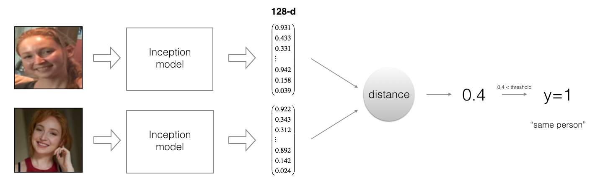
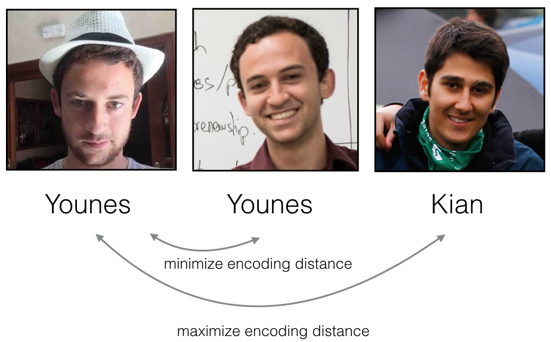
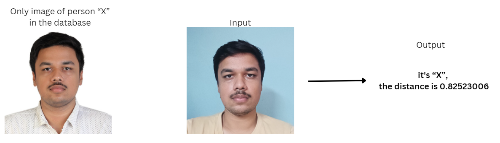

[Jun'24]
Face Recognition Using Siamese Network with Deep Learning
Face recognition problems commonly fall into one of two categories:
- Face Verification - "Is this the claimed person?" For example, at some airports, you can pass through customs by letting a system scan your passport and then verifying that you (the person carrying the passport) are the correct person. A mobile phone that unlocks using your face is also using face verification. This is a 1:1 matching problem.
- Face Recognition - "Who is this person?" For example, the video lecture showed a face recognition video of Baidu employees entering the office without needing to otherwise identify themselves. This is a 1:K matching problem.
Siamese Network encodes a face image into a vector of 128 numbers. By comparing two such vectors, it can be determined if two pictures are of the same person.
By using a 128-neuron fully connected layer as its last layer, the model ensures that the output is an encoding vector of size 128. You then use the encodings to compare two face images as follows:
By computing the distance between two encodings and thresholding, you can determine if the two pictures represent the same person. So, an encoding is a good one if:
- The encodings of two images of the same person are quite similar to each other.
- The encodings of two images of different persons are very different.
The triplet loss function formalizes this, and tries to "push" the encodings of two images of the same person (Anchor and Positive) closer together, while "pulling" the encodings of two images of different persons (Anchor, Negative) further apart.
In my project, I implemented a Siamese Network for face recognition using deep learning techniques. The model was trained to generate these 128-dimensional encodings for face images, which were then compared to verify or recognize individuals. This method ensures a high accuracy in distinguishing between different faces, making it suitable for both face verification and face recognition tasks.
Implementation Details
- Posed face recognition as a binary classification problem
- Implemented one-shot learning for a face recognition problem
- Applied the triplet loss function to learn a network's parameters in the context of face recognition
- Mapped face images into 128-dimensional encodings using a pretrained model
- Performed face verification and face recognition with these encodings
One of the key challenges addressed in this project was the development of an effective triplet loss function that accurately differentiates between similar and dissimilar faces. The network was fine-tuned to achieve optimal performance, balancing the distance between positive and negative pairs of images.
This approach has numerous applications, including security systems, user authentication on devices, and automated attendance systems. The ability to reliably identify or verify individuals based on their facial features opens up many possibilities for enhancing security and convenience in various domains.
Overall, this project showcases the potential of Siamese Networks in face recognition and highlights the effectiveness of deep learning in solving complex problems in computer vision.
